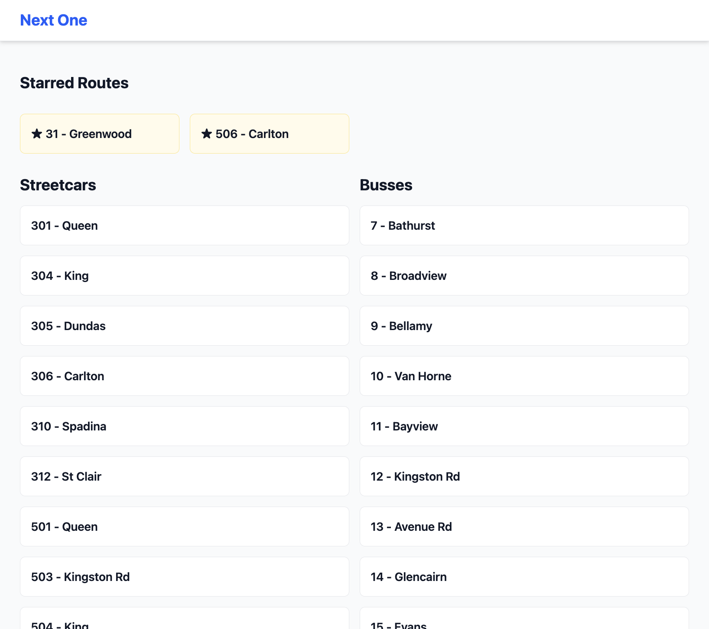
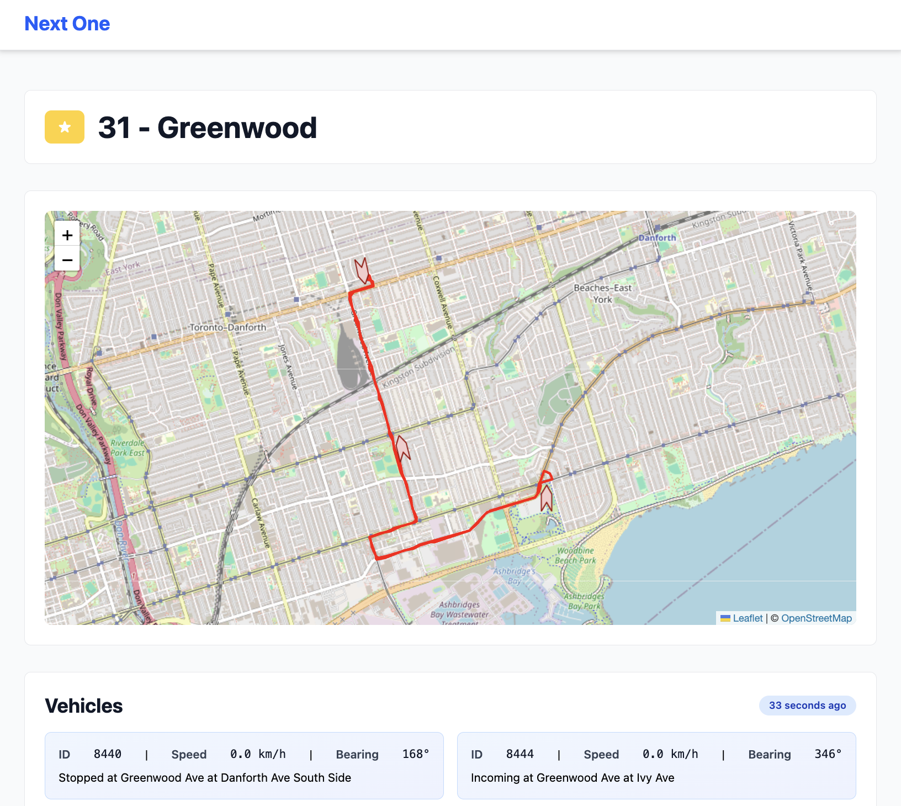
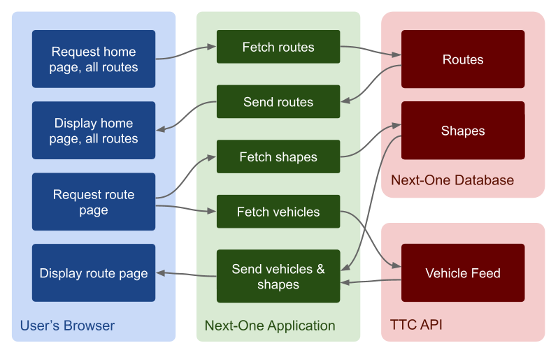
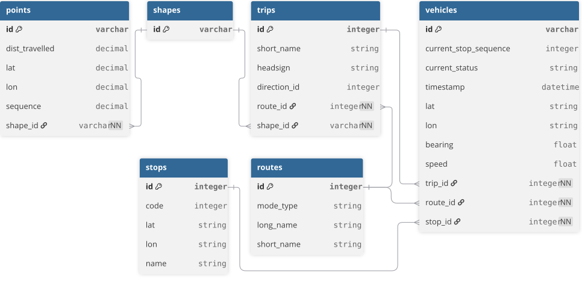

Introduction
I wanted an app where I could quickly see where the next bus or streetcar is. While you can do that on Google Maps, you need to zoom in to where a stop is and then click it to see it. Transit App does what I described but requires you to download the app. I wanted to build this app because it combines so many of my interests: web mapping, public transit, and full-stack software development.


Thankfully, Toronto’s public transit agency, the TTC, makes their transit data available to the public using the GTFS data format. Below you’ll find a short glossary of terms specific to the dataset used to build Next-One.
Glossary
| GTFS | General Transit Feed Specification |
| GTFS-RT | General Transit Feed Specification Realtime |
| Rotues | A group of trips displayed to riders as a single service |
| Trips | A sequence of 2 or more stops that occur during a specified time |
| Shapes | Spatial features (points, lines, polygons) representing the vehicle’s routing |
Tech Stack
Frontend - Hotwire (Turbo & Stimulus), Tailwind, Leaflet.js
- Tailwind’s utility classes make CSS quick and easy to prototype and develop.
- Hotwire is packaged with Rails and creates a Single Page Application experience without relying on a bunch of code being executed client-side.
Backend - Rails
- Ruby on Rails makes it easy to quickly develop and deploy web apps.
Database - SQLite
- Default on Rails applications, SQLite is more than capable of handling this project’s needs and is serverless.
Infra - Railway, GitHub
- Railway is both affordable and makes deployment and observability a breeze.
- GitHub for CI/CD and version control.
Architecture
In the diagram below you can see how the app handles requests from the browser.

There are two sources of data: the database, and the TTC API. Both sources are produced by the TTC and provide related but different types of GTFS data. The data stored in the database is static Schedule data while the data provided by the API is rRealtime data.
The Schedule data represents the planned (scheduled) service that is decided ahead of time. This data is published every three weeks and contains all of the existing routes, their scheduled trips, stops, and the spatial data describing each trip. This static data describes what the TTC plans to operate during the defined time period. A few days before the next time period starts, the TTC publishes a new batch of Schedule data. Next-One confirms there is a new Schedule dataset, downloads the zipped folder containing a number of CSV files, and processes the CSV rows into the SQLite database using ActiveRecord.
The Realtime data is fetched by the application when a user requests information about a specific route, namely the vehicles currently on trips belonging to the route. The routes controller calls the TTC API which returns a feed of the latest vehicle positions. That feed is processed and the data is stored in- memory. This data becomes stale within a few seconds, so storing it in the database would be unnecessary, as there is no use case requiring us to retrieve it later.
With scalabilityefficiency in mind, before processing the fetched feed the application checks the time stamp on the data. whether the feed has the same timestamp as the previous and already processed feed. If they have the newsame timestamp matches the timestamp of the data already stored in-memory, the application skips the processing step and returnssends the browser the vehicle information already in memory.
Linking the realtime data to the static data happens via foreign keys. Each vehicle contains the ID of the route, trip, and stop it is on (or approaching). You can see the relationships between the different entities in the schema below. While the vehicle data isn’t stored in the database, and so isn’t actually in the application’s database schema, I added it to the diagram below to show the relationships between the realtime and static data.

The Build Process and Lessons Learned
Next-One’s build process was fueled by curiosity and excitement. While I spent some time planning the steps required to deploy the original MVP, I spent more time than needed learning about tools and GTFS details. Additionally, I want to develop a better sense for identifying the problems where it makes sense to go with the first solution I come to vs the problems that are worth spending time understanding and brainstorming.
At first I built the UI with a desktop screen in mind and, as expected, had to later redo a lot of styling to achieve a harmonious and intuitive responsive UI for mobile screen. Next time I’ll stick to Tailwind’s recommended mobile-first development. Even if I still still prefer browsing the web on my computer, an ever increasing number of users seem to prefer the mobile experience. Given that, all websites and web apps should be developed with mobile use in mind. Next time I’ll make sure to abide by Tailwind’s convention of mobile-first development.
AI assisted development is a skill I and many other devs are still honing. While working on this project I noticed a few times that it would have been faster to prompt Claude for some boilerplate code. While a lot of the frontend code was written by Claude, I did notice that it used an overly complex pattern to achieve a relatively simple feature. I believe Claude does well when it is asked to solve a specific problem; prompts should contain relevant context and details on what not to do and what to optimize for.
What's Next
- Incorporate Alert Feed The Alert Feed contains scheduled and realtime information on alterations and disruptions to routes.
- Incorporate Trip Update Feed The Trip Update Feed is used to update the scheduled vehicle departures with the most recent predictions given traffic and service disruptions.
- Create PWA version A Progrssive Web App would could provide push notifications and superior user experience.
- Investigate feasibility for adding other cities In theory the app should work with any transit agency thats uses the GTFS standard.
Conclusion
My main takeaway is that spending more time upfront planning is worth the investment. Breaking down the required work into small steps allows us to get incrementally closer to the MVP, resulting in quicker delivery and a smoother rollout. It is too easy to get excited about a new idea for a feature, or jump around trying to work on different parts of the project.
I truly enjoyed building Next-One and am looking forward to starting my next project and applying all of the valuable lessons I learned.